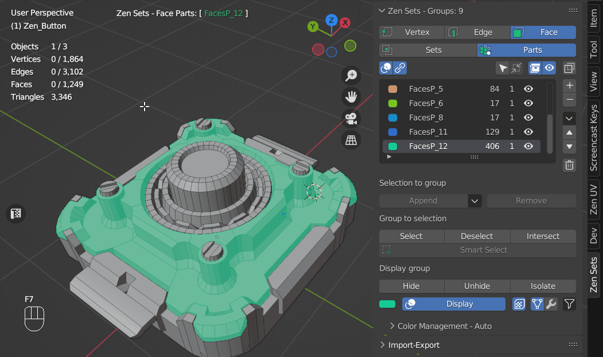

Zen Sets N-Panel
N-Panel contains all Zen Sets addon functionality and consits of Main, Import-Export, Tools, Preferences and Help collapsible subpanels.
Notice
This panel is available only in edit mode, when the object is being edited as a mesh

Main Subpanel
Contains all basic functionality for managing Zen Sets

Active Zen Sets Element Switch
Gives an option to change type of mesh geometry (vertex, edge or face) that can be assigned to a group

Notice
Zen Sets active element is synchronized with the Blender mesh selection mode by default

Notice
You can disable synchronization with mesh selection in addon preferences

Active Zen Sets Mode Switch
Sets mode
One element (Vertex, Edge, Face) may be assigned to more than one group and only active group is displayed in the viewport

Parts mode
One element (Vertex, Edge, Face) may belong only to one group and all groups or active group can be displayed in the viewport

Groups List

Contains the following information:
- Group Color
- Group Name
- Mesh Elements Count Shows how many mesh elements (verts, edges or faces) are in the current group
- Objects Count Shows how many objects in edit mode has elements with the same group
- Visibility Group Icon (eye icon)
- Group is completely visible
- Group is partially visible
- Group is completely hidden
- Group is completely visible
Toolbar

The Toolbar shows Groups List main settings and Display toggle button

-
 Display Groups in Viewport
Display Groups in Viewport -
Selection follows Selected Group (Select all elements after Selected Group has been changed)
-
Auto Frame Selected Elements (Move the view to the Selected elements center when selection changes)
-
 Display count of objects that have the Group
Display count of objects that have the Group -
 Display hidden Groups Info
Display hidden Groups Info -
Display all scene Groups or selected object groups
Sidebar
Add New Group
Creates new Group from selected mesh elements
Delete Active Group
Deletes Active Group from the selected Objects
Show Popup menu
Shows main panel Popup menu
Move Active Group Up
Moves active Group up in the Group List
Move Active Group Down
Moves active Group down in the Group List
Delete Groups
- Empty Groups Deletes Groups that does not contain any mesh elements
- Delete All Groups
- Deletes all groups in the Scene if Display all scene Groups option is set
- Deletes all groups in the Selected Objects if Display all scene Groups option is unset
Main panel Popup Menu

Select all objects by Group ID
Selects and adds to the Edit Mode all Objects that has the Active Group elements
Batch rename Groups
Option to rename all Groups in the list
Selection to group
Append
Appends selected Elements to selected Group
Remove
Removes selected Elements from selected Group

Group to selection
Select
Selects Elements of selected Group - Clear selection - an option to clear previous selection

Deselect
Removes selected Group Elements from mesh selection

Intersect
Selects Group Elements intersected with mesh selection

Smart select
Depends on selected mesh elements and has the next behaviour:
-
Select Group by selected Elements in Viewport If mesh selection belongs to Zen Sets group, all group elements are selected and other elements are deselected
-
Deselect Active Group and select Elements that does not belong to any group If mesh selection does not belong to any Zen Sets group, the active group is deselected and all mesh elements that don’t have group metainformation are selected

Display group
You can highlight the active group in Sets mode or all groups in Parts mode. Also you can hide, unhide active group or hide elements that don’t belong to the active group
Hide
Hides active group
Unhide
Unhides active group
Isolate
Hides elements that don’t belong to active group
Display
Toggles the display of the active group in Sets Mode or all groups in Parts Mode
Import-Export Subpanel
Tools Subpanel

Help Subpanel